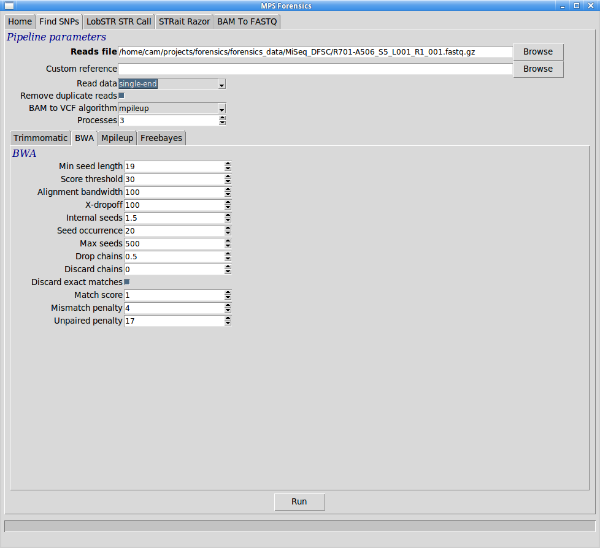

SNP calling can be performed within the MPS Forensics application by clicking on the "SNP calling" tab, next to the "Home" tab. This should show you a set of options and sub-tabs like this:

From here it is possible to choose the data set you wish to use. By default the pipelines will search for matching paired-end data and use this if found, you can override this behaviour and force single or paired-end operation. Reads are first QC'd and low quality bases/reads removed with Trimmomatic, before a second round of QC results are generated.
All standard tools for SNP finding use the same method of aligning reads to a reference genome - hg19 is the default, but another, indexed by BWA may be chosen as a "custom reference" - and then calling the differences that have been found using a dedicated tool. The pipeline installed here uses the BWA mem algorithm to perform the alignment step. Users can chose from Samtools Mpileup or Freebayes for calling SNPs.
Note: depending on the options chosen for each of these tools, it is possible to call indels in addition to SNPs.